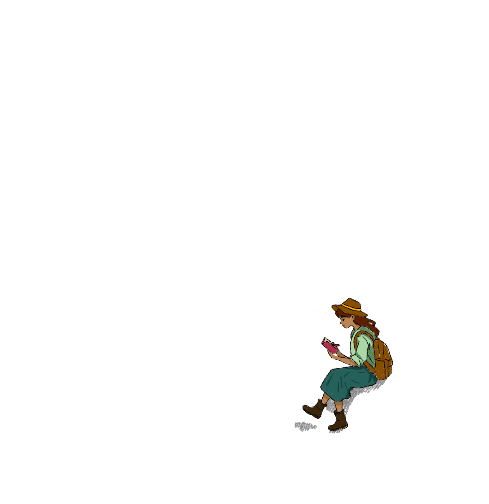
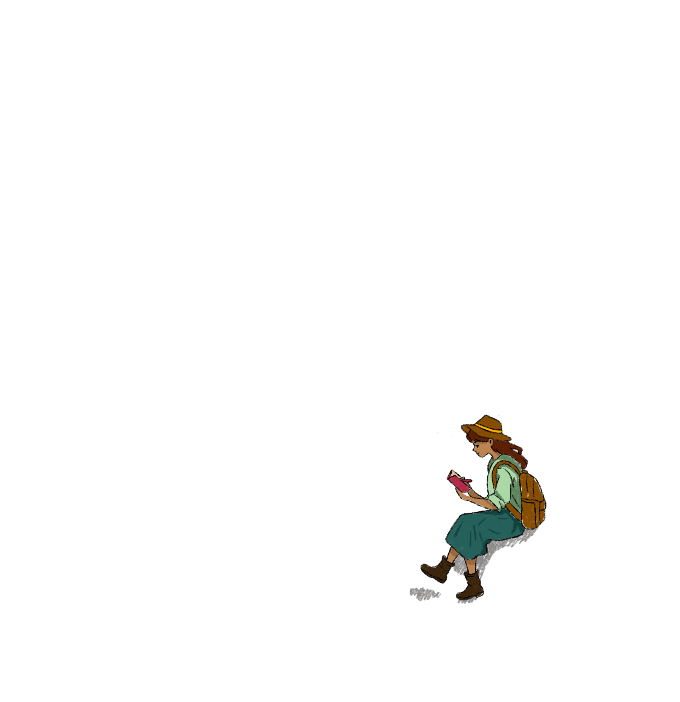

Un nuevo eco en el silencio
La ausencia tiene un nuevo nombre, y no es el final. Se dice que al partir, el alma no se desvanece, sino que se alza, enraizada. El recuerdo se vuelve tangible, custodiado en un cristal que pulsa con la memoria colectiva. ¿Es la muerte una metamorfosis? Prepárate para el evento que redefinirá el legado y la conexión. El ciclo está por revelarse.